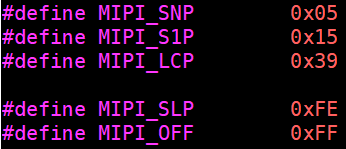

4.3.19. X3 mipi 屏适配说明
如何适配一个新的mipi-dsi显示屏（开源驱动）
用户如果想点亮一个新的mipi-dsi显示屏，可以从hobot_iar_cdev.c文件中的hobot_iar_store函数入手，该函数实现驱动与用户的交互，接收并解析用户的echo指令。例如用户输入echo dsi720p > /sys/devices/virtual/graphics/iar_cdev/iar_test_attr，那么驱动将会执行以下代码：
该段代码即可点亮一个mipi-dsi屏幕，点亮一个mipi-dsi屏幕的流程如下：
其中user_config_display函数来配置iar模块硬件，主要包括输入输出分辨率的配置，显示方式配置等，用户可以根据需求添加新的display_type，目前支持的mipi-dsi显示屏的分辨率有720*1280，1280*720和1080*1920,如果客户屏幕是目前驱动支持的分辨率就不需要添加新的display_type, 用户添加新的display_type后，配置可参考目前支持的mipi-dsi的配置，只需要修改分辨率即可，其他配置不用改。
set_mipi_display函数用来配置mipi-dsi core和屏幕，输入参数为屏幕类型，0为1080*1920的屏幕，1和2为720*1280类型的屏幕。
关于不同的屏幕类型，涉及到的不同配置如下：
MIPI_HSFREQRANGE
涉及代码如图
可以看到对于1080*1920的屏幕该参数配置的值是0x23, 对于720*1280的屏幕该参数配置的值是0x16, 该参数的具体含义如下（drivers/media/platform/hobot/mipi/hobot_mipi_dphy.c g_pll_sel_table）：
例如，0x23表示频率范围是235Mbps~250Mbps, 0x16表示频率范围是425Mbps~475Mbps，iar屏幕对应的频率的计算公式如下(屏幕分辨率宽+hbp+hfp+hs)*(屏幕分辨率高+vbp+vfp+vs)*(每个像素bit)*(帧率)/4，比如屏幕的分辨率是800*1280，每个像素24bit，4lane，那套用公式就是(800+8+48+52)*(1280+6+16+15)*24*60/4，计算出是430Mbps那么就是选0x16，一般调试720*1280/800*1280的屏幕分辨率都选0x16。
mipi_dphy_config
用户可以默认用panel_no为2的配置
mipi_dsi_video_cofing
该函数主要用来配置mipi-dsi屏幕的时序，配置参数来源于mipi-dsi屏幕的硬件手册。该函数的输入参数为struct video_timing, 该结构体定义如下
vid_pkt_size: configures the video packet size
vid_num_chunks: configures the number of chunks to use.The data in each chunk has the size provided by vid_pkt_size.
通常没有特殊需求时该参数设置为0即可
vid_null_size: configures the size of the null packets
通常没有特殊需求是该参数设置为0即可
vid_hsa: configures the video HSA time
vid_hbp: configures the video HBP time
vid_hline_time: configures the overall time for each video line
vid_vsa: configures the VSA period
vid_vbp: configures the VBP period
vid_vfp: configures the VFP period
vid_vactive_line: configures the vertical resolution of video
mipi_dsi_panel_init
该函数用来配置屏幕，具体的配置序列由屏厂提供，屏幕配置示例代码可以参考下面

用户需要根据屏厂提供的屏幕配置序列构造一个结构体数组，该数组中的每一个成员代表一条配置指令，构造好初始化序列数组后就可以按找上图方式，根据不同的配置指令类型调用对应的配置函数进行指令配置。初始化序列数组如下图形式：
其中cmd_type包含以下几种：

其中MIPI_LCP表示长包，对应mipi屏幕配置协议中的0x39 data type
MIPI_S1P表示带一个参数的短包，对应mipi屏幕配置协议中的0x15 data type
MIPI_SNP表示不带参数的短包，对应mipi屏幕配置协议中的0x5 data type
MIPI_SLP不属于屏幕配置指令，而是单纯的sleep命令，用来保证屏幕配置的时序需求
MIPI_OFF不属于屏幕配置指令，代表屏幕配置序列结束
屏幕配置完成后调用mipi_dsi_set_mode(0)来结束屏幕配置，使mipi-dsi core进入正常的工作模式
4.3.19.1. mipi-dsi显示屏调试
mipi-dsi输出从芯片角度看由两个硬件IP组成，分别是iar core和mipi-dsi core，iar core输出并行信号给到mipi-dsi core。因此mipi-dsi屏幕调试需要调好两个硬件IP，两个硬件IP有各自的时序参数。
通常的调试方法是先调mipi-dsi core，再调iar core
Mipi-dsi core调试
根据mipi-dsi屏幕手册，填入mip-dsi core相关的时序参数，时序参数参考上一节中的介绍，主要需要填入的包括hsfrequency range还有struct video_timing结构体。然后设置mipi-dsi core进入pattern模式，pattern模式包括横条color bar和竖条的color bar，看这两种pattern模式是否都显示正常，如果都显示正常就可以固定mipi-dsi core这个IP的时序参数，如果pattern模式不正常可能需要在现有的mipi-dsi的时序参数下进行微调，微调时可以通过参数变化和屏幕显示现象变化发现规律，按照规律调整即可。pattern正常显示的标准为横条和竖条颜色正常，位置正常没有串位现象，没有严重闪动现象，由于之前调试中可能mipi-dsi core的时钟没有完全匹配，会导致后面即使正常了也会使屏幕有轻微闪动，这种轻微闪动属于正常现象。
Mipi-dsi core进入pattern模式的方法：
通过这个函数设置即可

Iar core 调试
Iar core除了基本的分辨率设置，主要需要调试的也是时序参数，时序参数主要包括pixel clock和struct disp_timing这个结构体。
其中disp_timing中的参数含义如下：
如果是标准分辨率，这些时序配置可以参考CEA协议进行配置：

详细时序图可以参考以下链接：
EIA-CEA-861-B - 道客巴巴 (doc88.com)
如果是非标准分辨率，可以找一个接近的分辨率进行设置，然后再那个时序参数上进行微调。如果有图像显示，只是有闪烁或串位现象说明参数差的不多，微调即可，如果图像完全没有的话可以先试着调整pixel clk。